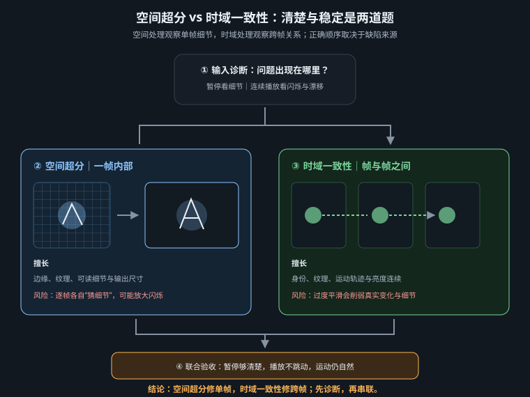

把空间分辨率与时间稳定性分开诊断：重建可用细节，而不是把每一帧各自“锐化得更像照片”

画质增强有两条互相牵制的轴。空间超分处理单帧里的轮廓、纹理、压缩块和分辨率；时域稳定要求同一细节在相邻帧中保持身份、位置与亮度连续。逐帧看很锐、播放时却有毛孔跳动、舰体纹理游走、细线忽隐忽现，说明空间指标上升而时间指标失败。AI 视频尤其容易出现这类问题，因为原片本就含有不稳定的“猜测细节”，逐帧图像超分会再猜一次。
因此，合格管线不是“选最锐模型然后放大”，而是先回答四个问题：交付分辨率是多少；源片的真实有效细节有多少；缺陷是模糊、压缩、生成伪影还是运动抖动；镜头是远景、材质中景还是人脸特写。超分只能重建局部外观，不能纠正错误动作、人物换脸、透视断裂或构图跑题。后四类问题应回生成阶段返工。
| 症状 | 逐帧暂停 | 连续播放 | 优先处方 |
|---|---|---|---|
| 低分辨率、边缘软 | 轮廓可信但不够细 | 运动基本稳定 | 时序视频超分，温和重建 |
| 压缩块与振铃 | 边缘有方块或光晕 | 块噪随画面跳动 | 先去压缩/轻降采样，再超分 |
| 纹理闪烁 | 每帧似乎都很锐 | 发丝、布纹、星点“沸腾” | 改用时序感知模型，降低锐化强度 |
| 身份或几何错误 | 五官、手、舰体结构已错 | 错误持续或突变 | 回首帧/视频生成，不交给超分 |
| 路线 | 机制 | 适合 | 主要风险 |
|---|---|---|---|
| SeedVR2 类修复式视频超分 | 读取多帧上下文，重建纹理与轻微伪影 | AI 人脸、皮肤、材质特写；需要“修复”而非单纯放大 | 慢；强度过高会发明毛孔、文字和结构 |
| FlashVSR 类流式视频超分 | 利用连续帧快速传播与恢复细节 | 中远景、批量镜头、时长较长的标准级处理 | 短片段或切镜混入同一任务时，上下文不足或串镜 |
| ESRGAN 类图像超分 | 每帧独立放大 | 静帧、海报帧、纹理稳定且无运动的测试素材 | 视频闪烁；锐化边缘与生成噪点被同时放大 |
社区节点会改变分块、窗口和显存策略。某实现要求特定 batch 或最少帧数，不代表所有版本都相同。把节点版本、权重、精度、窗口、分块与输出参数写入项目快照；升级后先用固定的 2～4 秒测试片 A/B，不要直接覆盖在制项目的基线。
AI 原片的像素尺寸不等于有效分辨率。一条 1344×768 视频可能只有轮廓可信，皮肤和舱壁充满轻微塑料纹、压缩噪声与时域抖动。直接放大到 4K，会把错误当证据保留下来。更稳妥的做法是先把不可靠的高频压掉，再重建到目标尺寸：源片若脏，可先缩到短边约 360～540 像素，使用高质量重采样；源片若已干净，则不降采样，只做 1.5×～2× 的保守增强。
输入：单镜头源视频 + 原始音频 → 按需轻降噪 / 0.5～0.75× 降采样 → 时序视频超分至 1920×1080 → 必要时 RIFE ×2（24→48 fps，播放时长不变） → 统一调色与颗粒 → H.264/H.265 中间审片；母版另存高码率格式 → 将原音频或混音母带按时间码接回
特写看真实性，中景看稳定性，远景看轮廓。人脸特写值得使用修复力更强的路线，但要严查睫毛、牙齿、皮肤纹理是否被重写；舰桥中景包含大量细线与屏幕，宁可稍软也不能闪；星舰远景的真实信息密度低，轻量放大或直接跳过常常更专业。项目中应建立三档工艺单，而不是全片套一个节点图。
| 工艺档 | 镜头 | 建议 | 验收重点 |
|---|---|---|---|
| 精修级 | 面部、眼睛、关键材质 | 修复式时序超分；短窗口多轮 A/B；保留原片对照 | 身份、毛孔尺度、虹膜高光、牙齿数量 |
| 标准级 | 人物中景、舰桥、动作镜 | 快速时序超分；较低重建强度；镜头单独处理 | 发丝、制服纹、屏幕细线是否连续 |
| 轻量级 | 星舰远景、雾、快速运动 | 重采样或跳过；必要时只去块噪与轻锐化 | 轮廓无光晕，星点不闪，雾不结块 |
镜头 ID：HB_S07_v03 源：1344×768 / 24 fps / 6.0 s / 无切镜 目标：1920×1080 / 48 fps / 时长 6.0 s 缺陷：皮肤蜡感；虹膜纹理弱；右侧发丝轻闪 禁止改变：脸型、瞳孔反光位置、蓝色主光方向、画面裁切 方案 A：原尺寸输入 → 修复式时序超分 1.43× → RIFE ×2 方案 B：0.75× 清理 → 修复式时序超分至 1080p → RIFE ×2 判定：A/B 盲看；正常速度无闪优先，其次才比较暂停帧细节
增强模型若支持文本条件，提示词只描述应保留的物理特征，不要加入新的叙事对象：
preserve the same captain identity and exact facial geometry, natural fine skin texture, stable iris detail, continuous short black hair, retain the blue key light from camera right and the original framing, no new accessories, no text, no change of expression, no oversharpening
全帧重建会把已经正确的区域也暴露给模型。面部可用带羽化的跟踪遮罩单独处理，舰桥屏幕与字幕安全区则优先保留原片；遮罩边缘必须跟随运动并留出过渡，不能让增强区像一块贴片。局部结果合回原片后，要在正常速度检查边界是否呼吸、肤色是否跳动、颗粒尺度是否突然改变。
超分前后还要保持同一色彩解释。HDR、Log 或全范围素材若被当作普通 Rec.709/有限范围读取，会表现为黑位压死、高光剪断或饱和度异常，而这些并不是模型能力问题。先用媒体信息确认像素格式、色彩原色、传递函数和范围；中间文件避免反复有损编码。调色在镜头匹配阶段完成，统一颗粒与最终锐化放在所有超分、插帧之后，确保全片只有一次共同的质感层。
| 局部对象 | 处理策略 | 验收 |
|---|---|---|
| 脸与眼睛 | 羽化跟踪遮罩，保守强度，必要时与原片混合 | 边缘无贴片感，身份与表情不变 |
| 屏幕与文字 | 优先保留原始层或后期重做，避免生成式重建 | 字符不变形、不闪烁 |
| 雾、颗粒、星点 | 降低重建强度，最终统一添加颗粒 | 随机细节不沸腾，黑位无色带 |
| 失败 | 高概率原因 | 修复顺序 |
|---|---|---|
| 纹理沸腾、星点闪烁 | 逐帧模型；时序窗口不足；重建强度过高 | 确认视频模型 → 加长有效上下文 → 降强度 → 必要时轻降采样 |
| 面部变成另一个人 | 修复模型重写高层语义 | 降低倍率/强度 → 换保守模型 → 用遮罩仅处理背景 → 回生成 |
| 边缘出现白圈 | 多次锐化、过强局部对比或有损源振铃 | 关闭前置锐化 → 从更干净母版重做 → 最后仅一次温和锐化 |
| 分块接缝 | tile 重叠不足、VAE 分块边界暴露 | 增加重叠 → 改分块尺寸 → 降分辨率/启用卸载避免 OOM |
| 插帧后变慢动作 | 帧数增加但封装 fps 未同比提高 | 输出 fps = 输入 fps × 插帧倍率；核对总时长 |
| 成片无声或不同步 | 拆帧后未接回音轨；处理改变时长 | 先核对首尾时间码与时长，再将音频接回合成节点 |
□ 分辨率、帧率、时长与交付书一致；□ 正常速度播放无纹理闪烁、亮度抽动和分块；□ 100% 显示无过锐白边；□ 人脸、手、文字与标志没有被“再创造”；□ 切镜前后未串色串纹；□ 音频存在且首尾同步；□ 保存源片、参数快照与 A/B 测试；□ 远景没有为追求数字而进行无收益的过度处理。